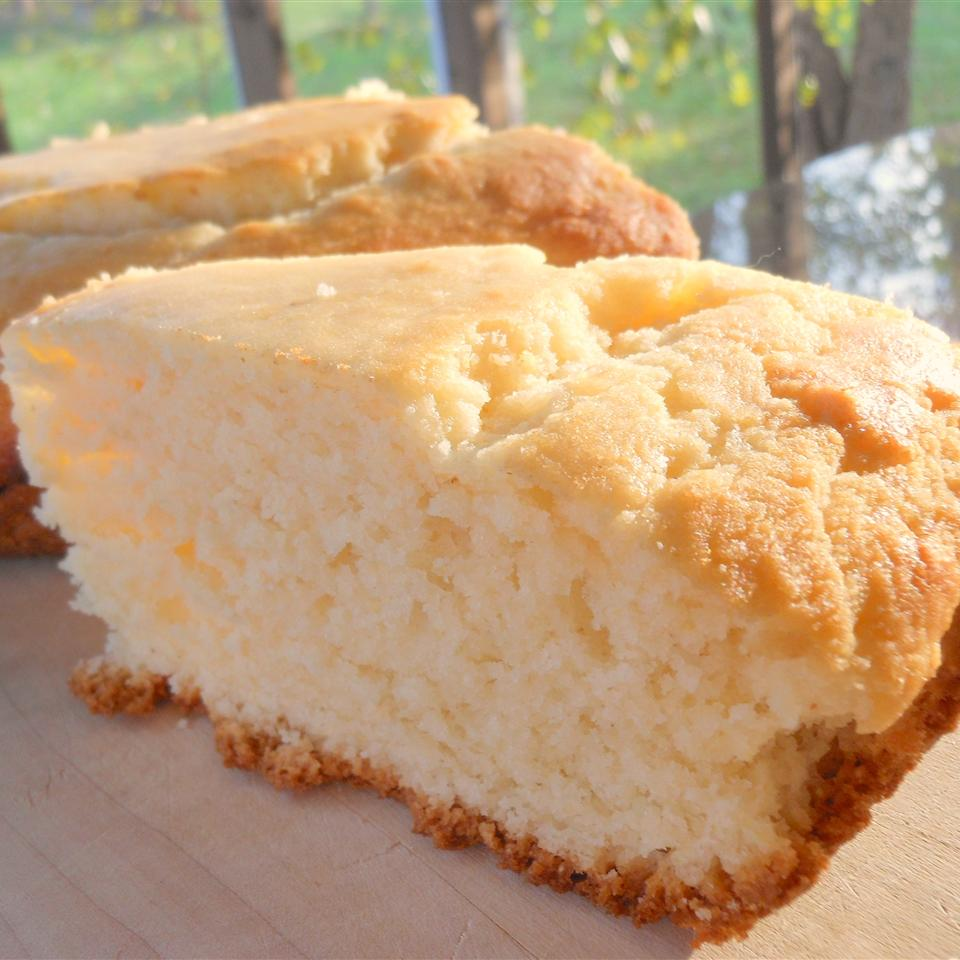

Amusement Park Cornbread

How to Make the Best Cornbread
I absolutely love cornbread. My wife makes the best cornbread you have ever had, and here's the secret: It's Jiffy from a box!
This cornbread is quick and easy to make, and it comes out perfect and fluffy every time. I slather this with butter and eat a slice or two with dinner.
Ingredients
- 1 box Jiffy Corn Muffin Mix
- 1/3 cup milk (or half and half)
- 1 egg
- 2 TBSP canola oil
Steps
- Preheat the oven to 400 degrees F. Prepare a pie pan or baking dish and spray with nonstick cooking spray.
- In a large bowl, combine all ingredients and stir well with a wire whisk.
- Pour batter into pan and bake for approximately 25 minutes, or until a toothpick inserted into the center comes out clean.
- Remove from oven and allow to cool slightly. Slather with butter and serve!